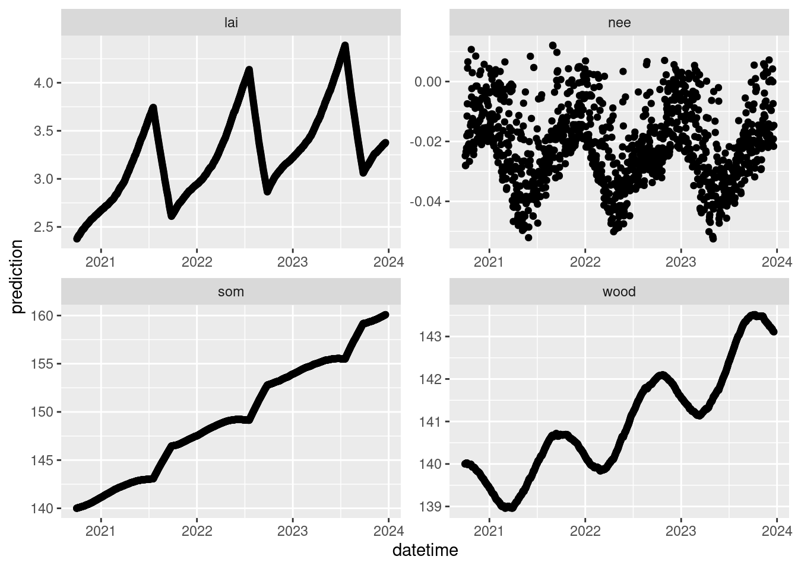

forest_model <- function(t, states, parms, inputs){
ens_members <- nrow(states)
inputs_temp <- inputs[, 1]
inputs_PAR <- inputs[, 2]
inputs_doy <- inputs[, 3]
##Unit Conversion: umol/m2/sec to Mg/ha/timestep
k <- 1e-6 * 12 * 1e-6 * 10000 * 86400 #mol/umol*gC/mol*Mg/g*m2/ha*sec/timestep
## photosynthesis
lai <- states[, 1] * parms$SLA * 0.1 #0.1 is conversion from Mg/ha to kg/m2
gpp <- pmax(0, k * parms$alpha * (1 - exp(-0.5 * lai)) * inputs_PAR)
gpp[inputs_PAR < 1e-20] <- 0 ## night
## respiration & allocation
ra <- gpp * parms$Ra_frac
npp <- gpp - ra
leaf_alloc <- npp * parms$leaf_frac
wood_alloc <- npp * (1 - parms$leaf_frac)
rh <- pmax(k * parms$Rbasal * states[, 3] * parms$Q10 ^ (inputs_temp / 10), 0) ## pmax ensures SOM never goes negative
## turnover
litterfall <- states[ , 1] * (parms$litterfall_rate * (365/ (params$litterfall_length)))
litterfall[!(inputs_doy > params$litterfall_start & inputs_doy[1] < (params$litterfall_start + params$litterfall_length))] <- 0.0
mortality <- states[ , 2] * parms$mortality
#Change in states
dleaves_dt <- leaf_alloc - litterfall
dwood_dt <- wood_alloc - mortality
dSOM_dt <- litterfall + mortality - rh
#
states[, 1] <- states[, 1] + dleaves_dt
states[, 2] <- states[, 2] + dwood_dt
states[, 3] <- states[, 3] + dSOM_dt
## update states
states[, 1] <- pmax(rnorm(ens_members, states[, 1] , parms$sigma.leaf), 0)
states[, 2] <- pmax(rnorm(ens_members, states[, 2], parms$sigma.stem), 0)
states[, 3] <- pmax(rnorm(ens_members, states[, 3], parms$sigma.soil), 0)
#Extra variables
lai <- states[, 1] * parms$SLA * 0.1
nee <- -(gpp - ra - rh)
return(cbind(state1 = states[, 1],
state2 = states[, 2],
state3 = states[, 3],
lai = lai,
gpp = gpp ,
nee = nee,
ra = ra,
npp_w = wood_alloc,
npp_l = leaf_alloc,
rh = rh,
litterfall = litterfall,
mortality = mortality))
}12 Process model
timestep: 1 day currency: MgC/ha dimension: 0-D
library(tidyverse)── Attaching core tidyverse packages ──────────────────────── tidyverse 2.0.0 ──
✔ dplyr 1.1.4 ✔ readr 2.1.4
✔ forcats 1.0.0 ✔ stringr 1.5.1
✔ ggplot2 3.4.4 ✔ tibble 3.2.1
✔ lubridate 1.9.3 ✔ tidyr 1.3.0
✔ purrr 1.0.2
── Conflicts ────────────────────────────────────────── tidyverse_conflicts() ──
✖ dplyr::filter() masks stats::filter()
✖ dplyr::lag() masks stats::lag()
ℹ Use the conflicted package (<http://conflicted.r-lib.org/>) to force all conflicts to become errorssite <- "TALL"
met_s3 <- arrow::s3_bucket(paste0("bio230014-bucket01/neon4cast-drivers/noaa/gefs-v12/stage3/site_id=", site),
endpoint_override = "sdsc.osn.xsede.org",
anonymous = TRUE)
inputs_all <- arrow::open_dataset(met_s3) |>
filter(variable %in% c("air_temperature", "surface_downwelling_shortwave_flux_in_air")) |>
mutate(datetime = as_date(datetime)) |>
mutate(prediction = ifelse(variable == "surface_downwelling_shortwave_flux_in_air", prediction/0.486, prediction),
variable = ifelse(variable == "surface_downwelling_shortwave_flux_in_air", "PAR", variable),
prediction = ifelse(variable == "air_temperature", prediction- 273.15, prediction),
variable = ifelse(variable == "air_temperature", "temp", variable)) |>
summarise(prediction = mean(prediction, na.rm = TRUE), .by = c("datetime", "variable", "parameter")) |>
collect()sim_dates <- seq(as_date("2020-09-30"), Sys.Date() - lubridate::days(1), by = "1 day")#Set parameters
ens_members <- 1
params <- list()
params$alpha <- rep(0.02, ens_members)
params$SLA <- rep(4.74, ens_members)
params$leaf_frac <- rep(0.315, ens_members)
params$Ra_frac <- rep(0.5, ens_members)
params$Rbasal <- rep(0.002, ens_members)
params$Q10 <- rep(2.1, ens_members)
params$litterfall_rate <- rep(1/(2.0*365), ens_members) #Two year leaf lifespan
params$litterfall_start <- rep(200, ens_members)
params$litterfall_length<- rep(70, ens_members)
params$mortality <- rep(0.00015, ens_members) #Wood lives about 18 years on average (all trees, branches, roots, course roots)
params$sigma.leaf <- rep(0.0, ens_members) #0.01
params$sigma.stem <- rep(0.0, ens_members) #0.01 ## wood biomass
params$sigma.soil <- rep(0.0, ens_members)# 0.01
params <- as.data.frame(params)13 Set drivers
inputs <- inputs_all |>
filter(datetime %in% as_date(sim_dates)) |>
mutate(doy = yday(datetime))
inputs_ensemble <- assign_met_ensembles(inputs, ens_members)output <- array(NA, dim = c(length(sim_dates), ens_members, 12)) #12 is the number of outputs
output[1, , 1] <- 5
output[1, , 2] <- 140
output[1, , 3] <- 14013.1 Run model
for(t in 2:length(sim_dates)){
output[t, , ] <- forest_model(t,
states = matrix(output[t-1 , , 1:3], nrow = ens_members) ,
parms = params,
inputs = matrix(inputs_ensemble[t ,, ], nrow = ens_members))
}output_df <- output_to_df(output, sim_dates, sim_name = "baseline")output_df |>
filter(variable %in% c("lai", "wood", "som", "nee")) |>
ggplot(aes(x = datetime)) +
geom_point(aes(y = prediction, group = ensemble)) +
facet_wrap(~variable, scale = "free")Warning: Removed 2 rows containing missing values (`geom_point()`).